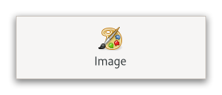

Class
GtkImage
Description [src]
final class Gtk.Image : Gtk.Widget {
/* No available fields */
}The GtkImage widget displays an image.

Various kinds of object can be displayed as an image; most typically,
you would load a GdkTexture from a file, using the convenience function
gtk_image_new_from_file(), for instance:
GtkWidget *image = gtk_image_new_from_file ("myfile.png");
If the file isn’t loaded successfully, the image will contain a “broken image” icon similar to that used in many web browsers.
If you want to handle errors in loading the file yourself,
for example by displaying an error message, then load the image with
gdk_texture_new_from_file(), then create the GtkImage with
gtk_image_new_from_paintable().
Sometimes an application will want to avoid depending on external data
files, such as image files. See the documentation of GResource inside
GIO, for details. In this case, GtkImage:resource,
gtk_image_new_from_resource(), and gtk_image_set_from_resource()
should be used.
GtkImage displays its image as an icon, with a size that is determined
by the application. See GtkPicture if you want to show an image
at is actual size.
CSS nodes
GtkImage has a single CSS node with the name image. The style classes
.normal-icons or .large-icons may appear, depending on the
GtkImage:icon-size property.
Accessibility
GtkImage uses the GTK_ACCESSIBLE_ROLE_IMG role.
Instance methods
gtk_image_get_storage_type
Gets the type of representation being used by the GtkImage
to store image data.
Methods inherited from GtkAccessible (10)
gtk_accessible_get_accessible_role
Retrieves the GtkAccessibleRole for the given GtkAccessible.
gtk_accessible_reset_property
Resets the accessible property to its default value.
gtk_accessible_reset_relation
Resets the accessible relation to its default value.
gtk_accessible_reset_state
Resets the accessible state to its default value.
gtk_accessible_update_property
Updates a list of accessible properties.
gtk_accessible_update_property_value
Updates an array of accessible properties.
gtk_accessible_update_relation
Updates a list of accessible relations.
gtk_accessible_update_relation_value
Updates an array of accessible relations.
gtk_accessible_update_state
Updates a list of accessible states. See the GtkAccessibleState
documentation for the value types of accessible states.
gtk_accessible_update_state_value
Updates an array of accessible states.
Methods inherited from GtkBuildable (1)
Properties
Gtk.Image:use-fallback
Whether the icon displayed in the GtkImage will use
standard icon names fallback.
Properties inherited from GtkWidget (34)
Gtk.Widget:can-focus
Whether the widget or any of its descendents can accept the input focus.
Gtk.Widget:can-target
Whether the widget can receive pointer events.
Gtk.Widget:css-classes
A list of css classes applied to this widget.
Gtk.Widget:css-name
The name of this widget in the CSS tree.
Gtk.Widget:cursor
The cursor used by widget.
Gtk.Widget:focus-on-click
Whether the widget should grab focus when it is clicked with the mouse.
Gtk.Widget:focusable
Whether this widget itself will accept the input focus.
Gtk.Widget:halign
How to distribute horizontal space if widget gets extra space.
Gtk.Widget:has-default
Whether the widget is the default widget.
Gtk.Widget:has-focus
Whether the widget has the input focus.
Gtk.Widget:has-tooltip
Enables or disables the emission of the ::query-tooltip signal on widget.
Gtk.Widget:height-request
Override for height request of the widget.
Gtk.Widget:hexpand
Whether to expand horizontally.
Gtk.Widget:hexpand-set
Whether to use the hexpand property.
Gtk.Widget:layout-manager
The GtkLayoutManager instance to use to compute the preferred size
of the widget, and allocate its children.
Gtk.Widget:margin-bottom
Margin on bottom side of widget.
Gtk.Widget:margin-end
Margin on end of widget, horizontally.
Gtk.Widget:margin-start
Margin on start of widget, horizontally.
Gtk.Widget:margin-top
Margin on top side of widget.
Gtk.Widget:name
The name of the widget.
Gtk.Widget:opacity
The requested opacity of the widget.
Gtk.Widget:overflow
How content outside the widget’s content area is treated.
Gtk.Widget:parent
The parent widget of this widget.
Gtk.Widget:receives-default
Whether the widget will receive the default action when it is focused.
Gtk.Widget:root
The GtkRoot widget of the widget tree containing this widget.
Gtk.Widget:scale-factor
The scale factor of the widget.
Gtk.Widget:sensitive
Whether the widget responds to input.
Gtk.Widget:tooltip-markup
Sets the text of tooltip to be the given string, which is marked up with Pango markup.
Gtk.Widget:tooltip-text
Sets the text of tooltip to be the given string.
Gtk.Widget:valign
How to distribute vertical space if widget gets extra space.
Gtk.Widget:vexpand
Whether to expand vertically.
Gtk.Widget:vexpand-set
Whether to use the vexpand property.
Gtk.Widget:visible
Whether the widget is visible.
Gtk.Widget:width-request
Override for width request of the widget.
Properties inherited from GtkAccessible (1)
Signals
Signals inherited from GtkWidget (13)
GtkWidget::destroy
Signals that all holders of a reference to the widget should release the reference that they hold.
GtkWidget::direction-changed
Emitted when the text direction of a widget changes.
GtkWidget::hide
Emitted when widget is hidden.
GtkWidget::keynav-failed
Emitted if keyboard navigation fails.
GtkWidget::map
Emitted when widget is going to be mapped.
GtkWidget::mnemonic-activate
Emitted when a widget is activated via a mnemonic.
GtkWidget::move-focus
Emitted when the focus is moved.
GtkWidget::query-tooltip
Emitted when the widgets tooltip is about to be shown.
GtkWidget::realize
Emitted when widget is associated with a GdkSurface.
GtkWidget::show
Emitted when widget is shown.
GtkWidget::state-flags-changed
Emitted when the widget state changes.
GtkWidget::unmap
Emitted when widget is going to be unmapped.
GtkWidget::unrealize
Emitted when the GdkSurface associated with widget is destroyed.
Signals inherited from GObject (1)
GObject::notify
The notify signal is emitted on an object when one of its properties has its value set through g_object_set_property(), g_object_set(), et al.